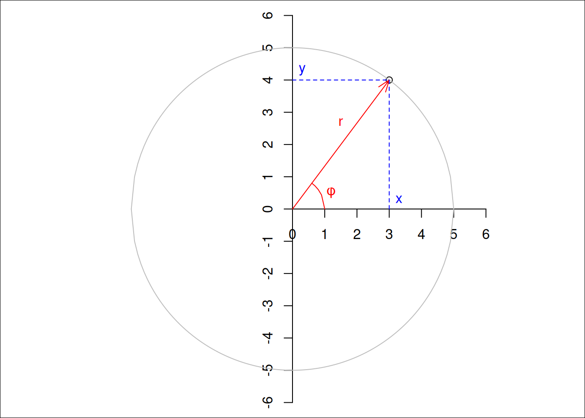
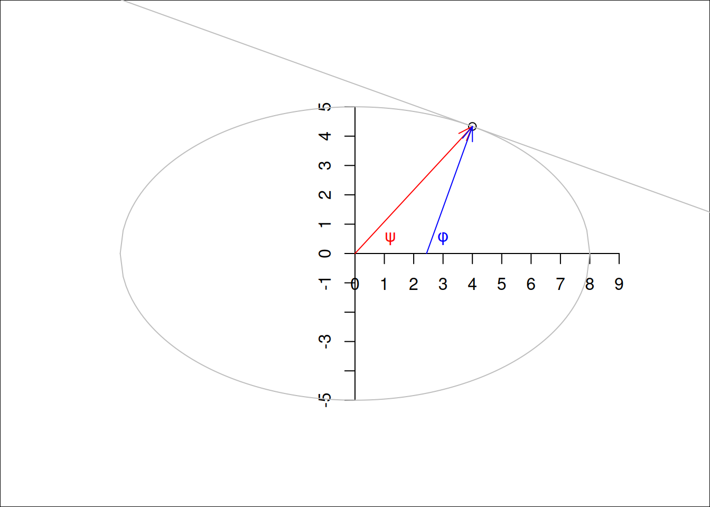

NAD83-2011 is the 2011 realization (Epoch 2010.00) of the NAD83 geographic coordinate system. NAD83 is defined on the GRS80 ellipsoid and tied to the North American tectonic plate (hence, the periodic updates). WGS84 is a geographic coordinate system defined on the WGS84 ellipsoid (also updated periodically). That said, the GRS80 ellipsoid and the WGS84 ellipsoid are very similar in size and shape.
(WGS84) UTM Zone 10N is an example of a projected coordinate system; where WGS84 coordinates in Zone 10N are projected (using the transverse Mercator method) onto the Zone 10N grid.
(NAD83-2011) State Plane Texas Central is another example of a projected coordinate system; the NAD83-2011 coordinates in central Texas are projected (using the Lambert Conformal Conic method) onto the Texas Central grid.
Coasts are a particularly difficult thing to measure due to the efer changing nature of the landscape and the intense ossolations of the tides. This difficulty is compounded by the different pollitical bounds the different orginizations exercise over the system, and the relative “arbitrarieness” that accompaines assosiating a datum to a water level. Below is a small inforgraphic of the different datums, zones, and the different state and federal entities that exersize control over their domains. These are not all of them, but the most common include (from inland domatins) the Mean High, High Water Mark, a mean of the highest high water marks for a given area, 2) the https://tidesandcurrents.noaa.gov/datum_options.html
From the inundation-mapping repo: https://github.com/NOAA-OWP/inundation-mapping/blob/c585dec276f1ae953a708962539cd0ee836403d0/tools/tools_shared_functions.py#L989
def ngvd_to_navd_ft(datum_info, region ='contiguous'):''' Given the lat/lon, retrieve the adjustment from NGVD29 to NAVD88 in feet. Uses NOAA tidal API to get conversion factor. Requires that lat/lon is in NAD27 crs. If input lat/lon are not NAD27 then these coords are reprojected to NAD27 and the reproject coords are used to get adjustment. There appears to be an issue when region is not in contiguous US. Parameters ---------- lat : FLOAT Latitude. lon : FLOAT Longitude. Returns ------- datum_adj_ft : FLOAT Vertical adjustment in feet, from NGVD29 to NAVD88, and rounded to nearest hundredth. '''#If crs is not NAD 27, convert crs to NAD27 and get adjusted lat lonif datum_info['crs'] !='NAD27': lat, lon = convert_latlon_datum(datum_info['lat'],datum_info['lon'],datum_info['crs'],'NAD27')else:#Otherwise assume lat/lon is in NAD27. lat = datum_info['lat'] lon = datum_info['lon']#Define url for datum API datum_url ='https://vdatum.noaa.gov/vdatumweb/api/convert'#Define parameters. Hard code most parameters to convert NGVD to NAVD. params = {} params['lat'] = lat params['lon'] = lon params['region'] = region params['s_h_frame'] ='NAD27'#Source CRS params['s_v_frame'] ='NGVD29'#Source vertical coord datum params['s_vertical_unit'] ='m'#Source vertical units params['src_height'] =0.0#Source vertical height params['t_v_frame'] ='NAVD88'#Target vertical datum params['tar_vertical_unit'] ='m'#Target vertical height#Call the API response = requests.get(datum_url, params = params, verify=False)#If successful get the navd adjustmentif response: results = response.json()#Get adjustment in meters (NGVD29 to NAVD88) adjustment = results['t_z']#convert meters to feet adjustment_ft =round(float(adjustment) *3.28084,2) else: adjustment_ft =Nonereturn adjustment_ft
From exposure to the outside world, these distinctions seem to be glossed over by many, but who then immediately jump into sub-meter comparisons. While you can make a bit of forward progresswhen ignoring some of those cascading errors and uncertainties, the misalignment of those model surfaces is quickly exposed by visual inspection at the hunman scale, and so you end up haivng to backtrack and reanalyise all of the processing steps and assumptions beofre you can be productive again.
Book theft
“Data are not just numbers, they are numbers with a context”; “In data analysis, context provides meaning” (cobbmoore?)
Before we can try to understand geometries like points, lines, polygons, coverage and grids, it is useful to review coordinate systems so that we have an idea what exactly coordinates of a point reflect. For spatial data, the location of observations are characterised by coordinates, and coordinates are defined in a coordinate system. Different coordinate systems can be used for this, and the most important difference is whether coordinates are defined over a 2 dimensional or 3 dimensional space referenced to orthogonal axes (Cartesian coordinates), or using distance and directions (polar coordinates, spherical and ellipsoidal coordinates). Besides a location of observation, all observations are associated with time of observation, and so time coordinate systems are also briefly discussed. First we will briefly review quantities, to learn what units and datum are.
Quantities, units, datum
The VIM (“International Vocabulary of Metrology”, (vim?)) defines a quantity as a “property of a phenomenon, body, or substance, where the property has a magnitude that can be expressed as a number and a reference”, where “[a] reference can be a measurement unit, a measurement procedure, a reference material, or a combination of such.” Although one could argue about whether all data is constituted of quantities, there is no need to argue that proper data handling requires that numbers (or symbols) are accompanied by information on what they mean, in particular what they refer to.
A measurement system consists of base units for base quantities, and derived units for derived quantities. For instance, the SI system of units (SI?) consists of seven base units: length (metre, m), mass (kilogram, kg), time (second, s), electric current (ampere, A), thermodynamic temperature (Kelvin, K), amount of substance (mole, mol), and luminous intensity (candela, cd). Derived units are composed of products of integer powers of base units; examples are speed (\(\mbox{m}~\mbox{s}^{-1}\)), density (\(\mbox{kg}~\mbox{m}^{-3}\)) and area (\(\mbox{m}^2\)).
The special case of unitless measures can refer to either cases where units cancel out (for instance mass fraction: kg/kg, or angle measured in rad: m/m) or to cases where objects or events were counted (such as “5 apples”). Adding an angle to a count of apples would not make sense; adding 5 apples to 3 oranges may make sense if the result is reinterpreted in terms of a superclass, in this case as pieces of fruit. Many data variables have units that are not expressible as SI base units or derived units. (hand?) discusses many such measurement scales, including those used to measure variables like intelligence in social sciences, in the context of measurement units.
For many quantities, the natural origin of values is zero. This works for amounts, where differences between amounts result in meaningful negative values. For locations and times, differences have a natural zero interpretation: distance and duration. Absolute location (position) and time need a fixed origin, from which we can meaningfully measure other absolute space time points: we call this a datum. For space, a datum involves more than one dimension. The combination of a datum and a measurement unit (scale) is a reference system.
We will now elaborate how spatial locations can be expressed as either ellipsoidal or Cartesian coordinates. The next sections will deal with temporal and spatial reference systems, and how they are handled in R.
Ellipsoidal coordinates
Code
par(mar =rep(0,4))plot(3, 4, xlim =c(-6,6), ylim =c(-6,6), asp =1)axis(1, pos =0, at =0:6)axis(2, pos =0, at =-6:6)xd <-seq(-5, 5, by = .1)lines(xd, sqrt(25- xd^2), col ='grey')lines(xd, -sqrt(25- xd^2), col ='grey')arrows(0, 0, 3, 4, col ='red', length = .15, angle =20)text(1.5, 2.7, label ="r", col ='red')xd <-seq(3/5, 1, by = .1)lines(xd, sqrt(1- xd^2), col ='red')text(1.2, 0.5, label =parse(text ="phi"), col ='red')lines(c(3,3), c(0,4), lty =2, col ='blue')lines(c(0,3), c(4,4), lty =2, col ='blue')text(3.3, 0.3, label ="x", col ='blue')text(0.3, 4.3, label ="y", col ='blue')

Figure 1: Two-dimensional polar (red) and Cartesian (blue) coordinates
Figure 1 shows both polar and Cartesian coordinates for a two-dimensional situation. In Cartesian coordinates, the point shown is \((x,y) = (3,4)\), for polar coordinates it is \((r,\phi) = (5, \mbox{arctan}(4/3))\), where \(\mbox{arctan}(4/3)\) is approximately \(0.93\) radians, or \(53^{\circ}\). Note that \(x\), \(y\) and \(r\) all have length units, where \(\phi\) is an angle (a unitless length/length ratio). Converting back and forth between Cartesian and polar coordinates is trivial, as
\[x = r~\mbox{cos} \phi,\ \ \ y = r~\mbox{sin} \phi, \ \mbox{and}\]\[r = \sqrt{x^2 + y^2}, \ \ \ \phi = \mbox{atan2}(y, x)\] where \(\mbox{atan2}\) is used in favour of \(\mbox{atan}(y/x)\) to take care of the right quadrant.
Spherical or ellipsoidal coordinates
In three dimensions, where Cartesian coordinates are expressed as \((x,y,z)\), spherical coordinates are the three-dimensional equivalent of polar coordinates and can be expressed as \((r,\lambda,\phi)\), where:
\(r\) is the radius of the sphere,
\(\lambda\) is the longitude, measured in the \((x,y)\) plane counter-clockwise from positive \(x\), and
\(\phi\) is the latitude, the angle between the vector and the \((x,y)\) plane.
Figure 2 illustrates Cartesian geocentric and ellipsoidal coordinates.
Figure 2: Cartesian geocentric coordinates (left) measure three distances, ellipsoidal coordinates (right) measure two angles, and possibly an ellipsoidal height
\(\lambda\) typically varies between \(-180^{\circ}\) and \(180^{\circ}\) (or alternatively from \(0^{\circ}\) to \(360^{\circ}\)), \(\phi\) from \(-90^{\circ}\) to \(90^{\circ}\). When we are only interested in points on a sphere with given radius, we can drop \(r\): \((\lambda,\phi)\) now suffice to identify any point.
It should be noted that this is just a definition, one could for instance also choose to measure polar angle, the angle between the vector and \(z\), instead of latitude. There is also a long tradition of specifying points as \((\phi,\lambda)\) but throughout this book we will stick to longitude-latitude, \((\lambda,\phi)\). The point denoted in Figure 2 has \((\lambda,\phi)\) or ellipsoidal coordinates with angular values
Code
p <-st_as_sfc("POINT(60 47)", crs ='OGC:CRS84')p[[1]]
POINT (60 47)
measured in degrees, and geocentric coordinates
Code
p <-st_as_sfc("POINT(60 47)", crs ='OGC:CRS84') |>st_transform("+proj=geocent")p[[1]]
POINT Z (2178844 3773868 4641765)
measured in metres.
For points on an ellipse, there are two ways in which angle can be expressed (Figure 3): measured from the centre of the ellipse (\(\psi\)), or measured perpendicular to the tangent on the ellipse at the target point (\(\phi\)).
Code
par(mar =rep(0,4))x <-4y <-5/8*sqrt(48)plot(x, y, xlim =c(-6,6), ylim =c(-8,8), asp =1)axis(1, pos =0, at =0:9)axis(2, pos =0, at =-5:5)xd <-seq(-8, 8, by = .1)lines(xd, 5/8*sqrt(64- xd^2), col ='grey')lines(xd, 5/8*-sqrt(64- xd^2), col ='grey')arrows(0, 0, x, y, col ='red', length = .15, angle =20)b <- (x *25) / (-y *64)a <- y - x * babline(a, b, col ='grey')b <--1/bx0 <- x - y / barrows(x0, 0, x, y, col ='blue', length = .15, angle =20)text(1.2, 0.5, label =parse(text ="psi"), col ='red')text(3, 0.5, label =parse(text ="phi"), col ='blue')

Figure 3: Angles on an ellipse: geodetic (blue) and geocentric (red) latitude
The most commonly used parametric model for the Earth is an ellipsoid of revolution, an ellipsoid with two equal semi-axes (iliffelott?). In effect, this is a flattened sphere (or spheroid): the distance between the poles is (slightly: about 0.33%) smaller than the distance between two opposite points on the equator. Under this model, longitude is always measured along a circle (as in Figure 2), and latitude along an ellipse (as in Figure 3). If we think of Figure 3 as a cross section of the Earth passing through the poles, the geodetic latitude measure \(\phi\) is the one used when no further specification is given. The latitude measure \(\psi\) is called the geocentric latitude.
we can add altitude or elevation to longitude and latitude to define points that are above or below the ellipsoid, and obtain a three-dimensional space again. When defining altitude, we need to choose:
where zero altitude is: on the ellipsoid, or relative to the surface approximating mean sea level (the geoid)?
which direction is positive, and
which direction is “straight up”: perpendicular to the ellipsoid surface, or in the direction of gravity, perpendicular to the surface of the geoid?
All these choices may matter, depending on the application area and required measurement accuracies.
The shape of the Earth is not a perfect ellipsoid. As a consequence, several ellipsoids with different shape parameters and bound to the Earth in different ways are being used. Such ellipsoids are called datums, and are briefly discussed in ?@sec-crs, along with coordinate reference systems.
Projected coordinates, distances
Because paper maps and computer screens are much more abundant and practical than globes, when we look at spatial data we see it projected: drawn on a flat, two-dimensional surface. Computing the locations in a two-dimensional space means that we work with projected coordinates. Projecting ellipsoidal coordinates means that shapes, directions, areas, or even all three, are distorted (iliffelott?).
Distances between two points \(p_i\) and \(p_j\) in Cartesian coordinates are computed as Euclidean distances, in two dimensions by \[d_{ij} = \sqrt{(x_i-x_j)^2+(y_i-y_j)^2}\] with \(p_i = (x_i,y_i)\) and in three dimensions by \[d_{ij} = \sqrt{(x_i-x_j)^2+(y_i-y_j)^2+(z_i-z_j)^2}\] with \(p_i = (x_i,y_i,z_i).\)
These distances represent the length of a straight line between two points \(i\) and \(j\).
For two points on a circle, the length of the arc of two points \(c_1 = (r,{\phi}_i)\) and \(c_2 = (r, \phi_2)\) is \[s_{ij}=r~|\phi_1-\phi_2| = r ~\theta\] with \(\theta\) the angle between \(\phi_1\) and \(\phi_2\) in radians. For very small values of \(\theta\), we will have \(s_{ij} \approx d_{ij}\), because a small arc segment is nearly straight.
For two points \(p_1 = (\lambda_1,\phi_1)\) and \(p_2 = (\lambda_2,\phi_2)\) on a sphere with radius \(r'\), the great circle distance is the arc length between \(p_1\) and \(p_2\) on the circle that passes through \(p_1\) and \(p_2\) and has the centre of the sphere as its centre, and is given by \(s_{12} = r ~ \theta_{12}\) with
\[\theta_{12} = \arccos(\sin \phi_1 \cdot \sin \phi_2 + \cos \phi_1 \cdot \cos \phi_2 \cdot \cos(|\lambda_1-\lambda_2|))\] the angle between \(p_1\) and \(p_2\), in radians.
Arc distances between two points on a spheroid are more complicated to compute; a good discussion on the topic and an explanation of the method implemented in GeographicLib (part of PROJ) is given in (karney2013algorithms?).
To show that these distance measures actually give different values, we computed them for the distance Berlin - Paris. Here, gc_ refers to ellipsoidal and spherical great circle distances, str_ refers to straight line, Euclidean distances between Cartesian geocentric coordinates associated on the WGS84 ellipse and sphere:
Code
pts <-st_sfc(st_point(c(13.4050, 52.5200)), st_point(c(2.3522, 48.8566)), crs ='OGC:CRS84')s2_orig <-sf_use_s2(FALSE)d1 <-c(gc_ellipse =st_distance(pts)[1,2])sf_use_s2(TRUE)# or, without using s2, use st_distance(st_transform(pts, "+proj=cart +ellps=sphere"))d2 <-c(gc_sphere =st_distance(pts)[1,2])p <-st_transform(pts, "+proj=cart +ellps=WGS84")d3 <-c(str_ellipse = units::set_units(sqrt(sum(apply(do.call(cbind, p), 1, diff)^2)), m))p2 <-st_transform(pts, "+proj=cart +ellps=sphere")d4 <-c(str_sphere = units::set_units(sqrt(sum(apply(do.call(cbind, p2), 1, diff)^2)), m))res <-c(d1, d3, d2, d4) # note order# print as km, re-add names:sf_use_s2(s2_orig) # back to what it was before changingres |> units::set_units(km) |>setNames(names(res)) |>print(digits =5)
Two-dimensional and three-dimensional Euclidean spaces (\(R^2\) and \(R^3\)) are unbounded. Every line in this space has infinite length, and areas or volumes have no natural upper limit. In contrast, spaces defined on a circle (\(S^1\)) or sphere (\(S^2\)) define a bounded set: there may be infinitely many points but the length and area of the circle, and the radius, area and volume of a sphere are bounded.
This may sound trivial but leads to some interesting challenges when handling spatial data. A polygon on \(R^2\) has unambiguously an inside and an outside. On a sphere, \(S^2\), any polygon divides the sphere in two parts, and which of these two is to be considered inside and which outside is ambiguous and needs to be defined by the traversal direction. ?@sec-spherical will further discuss consequences when working with geometries on \(S^2\).
Coordinate reference systems
We follow (lott2015?) when defining the following concepts (italics indicate literal quoting):
a coordinate system is a set of mathematical rules for specifying how coordinates are to be assigned to points,
a datum is a parameter or set of parameters that define the position of the origin, the scale, and the orientation of a coordinate system,
a geodetic datum is a datum describing the relationship of a two- or three-dimensional coordinate system to the Earth, and
a coordinate reference system is a coordinate system that is related to an object by a datum; for geodetic and vertical datums, the object will be the Earth.
A readable text that further explains these concepts is (iliffelott?).
The Earth does not follow a regular shape. The topography of the Earth is of course known to vary strongly, but also the surface formed by constant gravity at mean sea level, the geoid, is irregular. A commonly used model that is fit to the geoid is an ellipsoid of revolution, which is an ellipse with two identical minor axes. Fitting such an ellipsoid to the Earth gives a datum. However, fitting it to different areas, or based on different sets of reference points gives different fits, and hence different datums: a datum can for instance be fixed to a particular tectonic plate (like the European Terrestrial Reference System 1989 (ETRS89)), others can be globally fit (like WGS84). More local fits lead to smaller approximation errors.
The definitions above imply that coordinates in degrees longitude and latitude only have a meaning and can only be interpreted unambiguously as Earth coordinates, when the datum they are associated with is given.
Note that for projected data, the data that were projected are associated with a reference ellipsoid (datum). Going from one projection to another without changing datum is called coordinate conversion, and passes through the ellipsoidal coordinates associated with the datum involved. This process is lossless and invertible: the parameters and equations associated with a conversion are not empirical. Recomputing coordinates in a new datum is called coordinate transformation, and is approximate: because datums are a result of model fitting, transformations between datums are models too that have been fit; the equations involved are empirical, and multiple transformation paths, based on different model fits and associated with different accuracies, are possible.
Plate tectonics imply that within a global datum, fixed objects may have coordinates that change over time, and that transformations from one datum to another may be time-dependent. Earthquakes are a cause of more local and sudden changes in coordinates. Local datums may be fixed to tectonic plates (such as ETRS89), or may be dynamic.
PROJ and mapping accuracy
Very few living people active in open source geospatial software can remember the time before PROJ. PROJ (evenden:90?) started in the 1970s as a Fortran project, and was released in 1985 as a C library for cartographic projections. It came with command line tools for direct and inverse projections, and could be linked to software to let it support (re)projection directly. Originally, datums were considered implicit, and no datum transformations were allowed.
In the early 2000s, PROJ was known as PROJ.4, after its never-changing major version number. Amongst others motivated by the rise of GPS, the need for datum transformations increased and PROJ.4 was extended with rudimentary datum support. PROJ definitions for coordinate reference systems would look like this:
+proj=utm +zone=33 +datum=WGS84 +units=m +no_defs
where key=value pairs are preceded by a + and separated by a space. This form came to be known as “PROJ.4 string”, since the PROJ project stayed at version 4.x for several decades. Other datums would come with fields like:
indicating another ellipse, as well as the seven (or three) parameters for transforming from this ellipse to WGS84 (the “World Geodetic System 1984” global datum once popularised by GPS), effectively defining the datum in terms of a transformation to WGS84.
Along with PROJ.4 came a set of databases with known (registered) projections, from which the best known is the European Petroleum Survey Group (EPSG) registry. National mapping agencies would provide (and update over time) their best guesses of +towgs84= parameters for national coordinate reference systems, and distribute through the EPSG registry, which was part of PROJ distributions.
For some transformations, datum grids were available and distributed as part of PROJ.4: such grids are raster maps that provide for every location pre-computed values for the shift in longitude and latitude, or elevation, for a particular datum transformation.
In PROJ.4, every coordinate transformation had to go through a conversion to and from WGS84; even reprojecting data associated with a datum different from WGS84 had to go through a transformation to and from WGS84. The associated errors of up to 100 m were acceptable for mapping purposes for not too small areas, but some applications need higher accuracy transformations. Examples include precision agriculture, planning flights of UAV’s, or object tracking.
In 2018, after a successful “GDAL Coordinate System Barn Raising” initiative, a number of companies profiting from the open source geospatial software stack supported the development of a more modern, mature coordinate transformation system in PROJ. Over a few years, PROJ.4 evolved through versions 5, 6, 7, 8 and 9 and was hence renamed into PROJ (or PR\(\phi\)J).
The most notable changes include:
although PROJ.4 strings can still be used to initialise certain coordinate reference systems, they are no longer sufficient to represent all of them; a new format, WKT-2 (described in next section) replaces it
WGS84 as a hub datum is dropped: coordinate transformations no longer need to go through a particular datum
multiple conversion or transformation paths (so-called pipelines) to go from CRS A to CRS B are possible, and can be reported along with the associated accuracy; PROJ will by default use the most accurate one but user control is possible
transformation pipelines can chain an arbitrary number of elementary transformation operations, including swapping of axes and unit transformations
datum grids, of which there are now many more, are no longer distributed with the library but are accessible from a content delivery network (CDN); PROJ allows enabling and disabling network access to these grids and only downloads the section(s) of the grid actually needed, storing it in a cache on the user’s machine for future use
coordinate transformations receive support for epochs, time-dependent transformations (and hence: four-dimensional coordinates, including the source and target time)
the set of files with registered coordinate reference systems is handled in an SQLite database
instead of always handling axis order (longitude, latitude), when the authority defines differently this is now obeyed (but see ?@sec-wkt2 and ?@sec-axisorder)
All these points sound like massive improvements, and accuracies of transformation can be below 1 metre. An interesting point is the last: Where we could safely assume for many decades that spatial data with ellipsoidal coordinates would have axis order (longitude, latitude), this is no longer the case. We will see in ?@sec-axisorder how to deal with this.
Figure 5: UK vertical datum grid, from ETRS89 (EPSG:4937) to ODN height (EPSG:5701), units m
Examples of a horizontal datum grids, downloaded from cdn.proj.org, are shown in Figure 4 and for a vertical datum grid in Figure 5. Datum grids may carry per-pixel accuracy values.
WKT-2
(lott2015?) describes a standard for encoding coordinate reference systems, as well as transformations between them using well-known text; the standard (and format) is referred to informally as WKT-2. As mentioned above, GDAL and PROJ fully support this encoding.
An example of WKT-2 for CRS EPSG:4326 is:
GEOGCRS["WGS 84",
ENSEMBLE["World Geodetic System 1984 ensemble",
MEMBER["World Geodetic System 1984 (Transit)"],
MEMBER["World Geodetic System 1984 (G730)"],
MEMBER["World Geodetic System 1984 (G873)"],
MEMBER["World Geodetic System 1984 (G1150)"],
MEMBER["World Geodetic System 1984 (G1674)"],
MEMBER["World Geodetic System 1984 (G1762)"],
MEMBER["World Geodetic System 1984 (G2139)"],
ELLIPSOID["WGS 84",6378137,298.257223563,
LENGTHUNIT["metre",1]],
ENSEMBLEACCURACY[2.0]],
PRIMEM["Greenwich",0,
ANGLEUNIT["degree",0.0174532925199433]],
CS[ellipsoidal,2],
AXIS["geodetic latitude (Lat)",north,
ORDER[1],
ANGLEUNIT["degree",0.0174532925199433]],
AXIS["geodetic longitude (Lon)",east,
ORDER[2],
ANGLEUNIT["degree",0.0174532925199433]],
USAGE[
SCOPE["Horizontal component of 3D system."],
AREA["World."],
BBOX[-90,-180,90,180]],
ID["EPSG",4326]]
This shows a coordinate system with the axis order latitude, longitude, although in most practical cases the axis order used is longitude, latitude. The ensemble of WGS84 ellipsoids listed represents its various updates over time. Ambiguity about which of these ensemble members a particular dataset should use leads to an uncertainty of several meters. The coordinate reference system OGC:CRS84 disambiguates the axis order and explicitly states it to be longitude, latitude, and is the recommended alternative to WGS84 datasets using this axis order. It does not disambiguate the datum ensemble problem.
“There are too many false conclusions drawn and stupid measurements made when geographic software, built for projected Cartesian coordinates in a local setting, is applied at the global scale” (chrisman?)
The previous chapter discussed geometries defined on the plane,\(R^2\). This chapter discusses what changes when we consider geometries not on the plane, but on the sphere (\(S^2\)).
Although we learned in ?@sec-cs that the shape of the Earth is usually approximated by an ellipsoid, none of the libraries shown in green in ?@fig-gdal-fig-nodetails provide access to a comprehensive set of functions that compute on an ellipsoid. Of the alternatives, only the s2geometry (R-s2?; s2geometry?) library provides spherical geometry calculations. From their site:
S2 approaches this problem by working exclusively with spherical projections. As the name implies, spherical projections map points on the Earth’s surface to a perfect mathematical sphere. Such mappings still create some distortion, of course, because the Earth is not quite spherical–but as it turns out, the Earth is much closer to being a sphere than a plane. With spherical projections, it is possible to approximate the entire Earth’s surface with a maximum distortion of 0.56%. Perhaps more importantly, spherical projections preserve the correct topology of the Earth – there are no singularities or discontinuities to deal with.
Why not project onto an ellipsoid? (The Earth isn’t quite ellipsoidal either, but it is even closer to being an ellipsoid than a sphere.) The answer relates to the other goals stated above, namely performance and robustness. Ellipsoidal operations are still orders of magnitude slower than the corresponding operations on a sphere. Furthermore, robust geometric algorithms require the implementation of exact geometric predicates that are not subject to numerical errors. While this is fairly straightforward for planar geometry, and somewhat harder for spherical geometry, it is not known how to implement all of the necessary predicates for ellipsoidal geometry. (“Overview” n.d.)
Straight lines
The basic premise of simple features of ?@sec-geometries is that geometries are represented by sequences of points connected by straight lines. On \(R^2\) (or any Cartesian space), this is trivial, but on a sphere straight lines do not exist. The shortest line connecting two points is an arc of the circle through both points and the centre of the sphere, also called a great circle segment. A consequence is that “the” shortest distance line connecting two points on opposing sides of the sphere does not exist, as any great circle segment connecting them has equal length. Note that the GeoJSON standard (geojson?) has its own definition of straight lines in geodetic coordinates (see Exercise 1 at the end of this chapter).
Ring direction and full polygon
Any polygon on the sphere divides the sphere surface in two parts with finite area: the inside and the outside. Using the “counter-clockwise rule” as was done for \(R^2\) will not work because the direction interpretation depends on what is defined as inside. A convention here is to define the inside as the left (or right) side of the polygon boundary when traversing its points in sequence. Reversal of the node order then switches inside and outside.
In addition to empty polygons, one can define the full polygon on a sphere, which comprises its entire surface. This is useful, for instance for computing the oceans as the geometric difference between the full polygon and the union of the land mass (see ?@fig-world and ?@fig-srsglobe).
Bounding box, rectangle, and cap
Where in \(R^2\) one can easily define bounding boxes as the range of the \(x\) and \(y\) coordinates, for ellipsoidal coordinates these ranges are not of much use when geometries cross the antimeridian (longitude +/- 180) or one of the poles. The assumption in \(R^2\) that lower \(x\) values are Westwards of higher ones does not hold when crossing the antimeridian. An alternative to delineating an area on a sphere that is more natural is the bounding cap, defined by its centre coordinates and a radius. For Antarctica, as depicted in Figures 6 (a) and (c), the bounding box formed by coordinate ranges is
where a value lng_lolarger than lng_hi indicates that the bounding rectangle spans the antimeridian. This property could not be inferred from the coordinate ranges.
Validity on the sphere
Many global datasets are given in ellipsoidal coordinates but are prepared in a way that they “work” when interpreted on the \(R^2\) space [-180,180] \(\times\) [-90,90]. This means that:
geometries crossing the antimeridian (longitude +/- 180) are cut in half, such that they no longer cross it (but nearly touch each other)
geometries including a pole, like Antarctica, are cut at +/- 180 and make an excursion through -180,-90 and 180,-90 (both representing the Geographic South Pole)
Figure 6 shows two different representations of Antarctica, plotted with ellipsoidal coordinates taken as \(R^2\) (top) and in a Polar Stereographic projection (bottom), without (left) and with (right) an excursion through the Geographic South Pole. In the projections as plotted, polygons (b) and (c) are valid, polygon (a) is not valid as it self-intersects, and polygon (d) is not valid because it traverses the same edge to the South Pole twice. On the sphere (\(S^2\)), polygon (a) is valid but (b) is not, for the same reason as (d) is not valid.
Figure 6: Antarctica polygon, (a, c): not passing through POINT(-180 -90); (b, d): passing through POINT(-180 -90) and POINT(180 -90)
Exercises
Try to solve the following exercises with R (without loading packages); try to use functions where appropriate:
list three geographic measures that do not have a natural zero origin
convert the \((x,y)\) points \((10,2)\), \((-10,-2)\), \((10,-2)\), and \((0,10)\) to polar coordinates
convert the polar \((r,\phi)\) points \((10,45^{\circ})\), \((0,100^{\circ})\), and \((5,359^{\circ})\) to Cartesian coordinates
How does the GeoJSON format (geojson?) define “straight” lines between ellipsoidal coordinates (Section 3.1.1)? Using this definition of straight, how does LINESTRING(0 85,180 85) look like in an Arctic polar projection? How could this geometry be modified to have it cross the North Pole?
For a typical polygon on \(S^2\), how can you find out ring direction?
Are there advantages of using bounding caps over using bounding boxes? If so, list them.
Why is, for small areas, the orthographic projection centred at the area a good approximation of the geometry as handled on \(S^2\)?
For rnaturalearth::ne_countries(country = "Fiji", returnclass = "sf"), check whether the geometry is valid on \(R^2\), on an orthographic projection centred on the country, and on \(S^2\). How can the geometry be made valid on \(S^2\)? Plot the resulting geometry back on \(R^2\). Compare the centroid of the country, as computed on \(R^2\) and on \(S^2\), and the distance between the two.
Consider dataset gisco_countries in R package giscoR, and select the country with NAME_ENGL == "Fiji". Does it have a valid geometry on the sphere? If so, how was this accomplished?